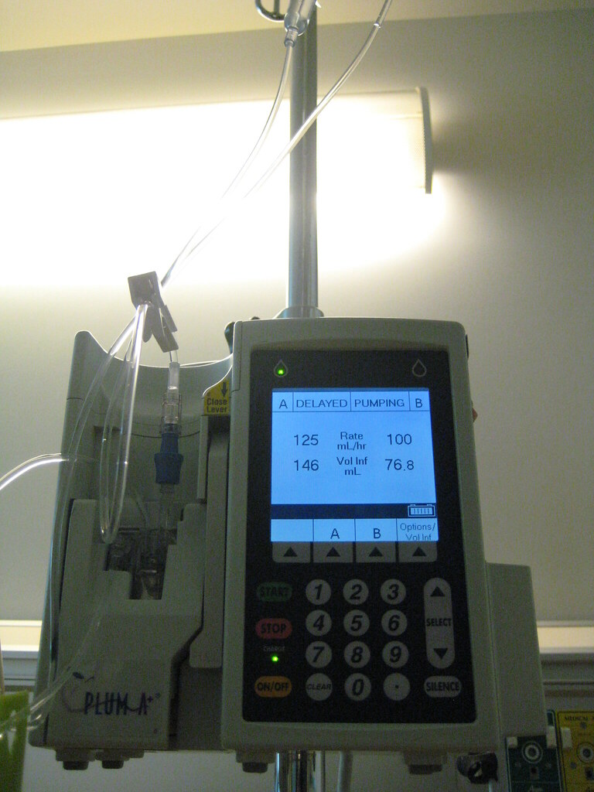

You make your way upstairs struggling abit due to your injuries. You enter the bedroom and lay down in the bed. You don't know why but it felt right. It was strange, even though you have no idea where you are, you felt a comforting warmth flush over you as you closed your eyes. You felt yourself drift away, are you dying? Bleeding to death? Neither, you open your eyes. You awoke from a coma. You see the faces of your loved ones around you. The tension you had retreats and is replaced by a flood of happiness. You were in a car accident, and was stuck in a nightmare induced coma. You're alive, but what was that place you dreamed of. Could have been nothing but questions flooded your mind. What if you made another decision, what would happen then?

Go back?